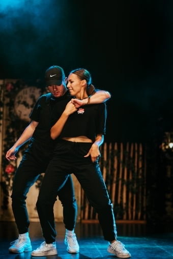

Deze basic lessen steken vol leuke choreo's die haalbaar zijn voor iedere danser. De focus ligt hier dan ook op het aanleren van leuke composities van bewegingen op hippe/populaire muziek. Ook onze allerjongste dansertjes willen we reeds de basis aanbieden op een speelse, maar leerrijke manier. Dansplezier is verzekerd!
Deze advanced lessen bieden een ruimte aan dansers waarin ze zich verder kunnen ontplooien binnen de hiphpopcultuur en waar dansers leren van elkaar. Thomas, Fabio en Chayenne zullen zich vooral toespitsen op verschillende stijlen binnen de hiphopcultuur: pipping, locking, house... terwijl Wout zal focussen op stijlen als voguing, waacking en feminine. Door dit ruime aanbod aan stijlen verkrijgen de dansers een breed scala aan zowel knowledge als skill level. Voor deze lessen zijn enkele jaren danservaring een vereiste. Indien nodig zal de lesgever je doorverwijzen naar een basic team om deze ervaring eerst op te bouwen.
Breakdance heeft verschillende soorten bewegingen, grofweg ingedeeld in top rock (staand dansen), footwork (vanuit gehurkte positie), powermoves en freezes (poses). Deze verschillende soorten bewegingen komen ruimschoots aan bod in de lessen. Binnen break draait het om het hebben van een eigen stijl, originaliteit en expressie.
In deze lessen sta je open voor de basistechnieken van de klassieke dans en hun benamingen. Van pliés, gepunte voeten, spotten, pirouettes, het basis floorwork tot het leren luisteren naar de muziek en het gebruiken van je gevoel voor ritme. In de choreo's is er ruimte voor vrijere, expressievere bewegingsvormen waar balans, ademhaling, spanning en ontspanning een belangrijke rol spelen.
In deze les zal je technisch en choreografisch uitgedaagd worden en ga je aan de slag met verschillende aspecten uit de moderne dans. Van floorwork tot invloeden uit de Hortontechnieken én uitdagende choreo's. Ga deze uitdaging aan en til je techniek naar een hoger niveau! Voor deze les is ervaring in deze stijl zeker een vereiste! Indien nodig zal de lesgever je doorverwijzen naar een reguliere les om je basis eerst op punt te krijgen.
Alle info omtrent onze wedstrijdteams: Chayenne Otten. Audities op 29 juni en 1 juli 2022.
